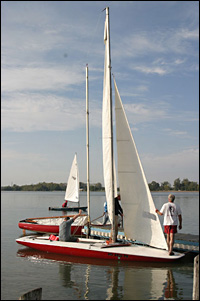

Our Sunday afternoon races are the main activity and focus of Creve Coeur Sailing Association. CCSA provides an organized way for boat owners and their crew to compete in a safe and fun environment.
We try to provide a balance between the "Rules Of Racing" and the fun of sailing fast in friendly competition. Our style of racing is to be challenging for experienced skippers, while encouraging new sailors to learn and grow their skills.
Over the summer CCSA stages about fourteen race days with three races per day, for a total of about forty races. We try to get them in twice a month or every other Sunday. However, holidays, other County Park events and the weather mean that some months there may be three race days and other months there may only be one.
St. Louis County Parks Division permits us to use the park to set up our onshore activities and to run our races out on the lake. On a typical Sunday we cordon off the south end of the lake’s eastern parking lot near the ramp at the bottom of the hill on Marine Drive, and generally have exclusive use of that area. There are about a dozen marked off spaces long enough for trailers. Skippers with beachable boats can park near the beach just west of the flagpole. Everyone else has to park where they can. It’s tight when we have more than twenty boats, so coming early pays off. Be flexible in the main area and try not to park in a manner that blocks traffic. Share the space with others.
How Races Are Organized
The official start signal of the first race is at 2:00 p.m., so skippers need to have their boat rigged and on the water by 1:45 at the latest, to make the first race. Before racing, skippers are also required to go to the Race Committee tent and register their boat.
There is no formal "Skippers Meeting" before the races, so you must get information about the course and the races for that day at the Race Committee desk. As part of the sign-in process, you acknowledge the Sailing Instructions for the CCSA and acknowledge your risk in sailing. If you do not feel comfortable sailing, it would be prudent to sit it out or ask for more experienced assistance.CCSA members sail a wide variety of boats. Some are very fast and some are slower. In order to level the playing field for all competitors, races are scored on a handicap basis. For instance, a fast boat may finish well ahead of a slower boat, but once the handicap formula is applied to their respective finish times, the slower boat may win on "Corrected Time".
The handicap for your type of boat is based on its Portsmouth Number. CCSA divides boats into two fleets. The Red Fleet is for boats with a Portsmouth Number greater than 96.5. Blue Fleet is for boats with a Portsmouth number of 96.5 or less. If you don’t know your Portsmouth Number, don’t worry, the Race Committee will assign it to you when you sign up. At this time, we use only the D-PN (Base PN).
Having two fleets and two starts usually means shorter race times and more racing. The faster boats in the Blue Fleet sail a longer course but generally finish about the same time as boats in the Red Fleet sailing a shorter course. It also means more winners and prizes at the end of the year.New sailors should pay attention to these rules. Don’t worry, CCSA members will answer any questions and guide you along the way.
For more detailed information on how the races are organized and the rules for competing, check out the CCSA “SAILING INSTRUCTIONS”.
What to Do on Race Day
Prior Planning and Practice - formulas that help you succeed on race days.
Here is a brief summary of what you need to do on race day:
- Prepare for racing before you leave home. You will need:
- Your boat and all its necessary parts, including a paddle.
- Safety equipment to include Coast Guard Approved life vests for each person on the boat. Make sure they are the right size and in good order.
- Personal equipment such as light clothing, sun shades, sailing or water shoes, a hat, sun blocker and plenty of liquids.
- A stopwatch to time your starts.
A basic understanding of how CCSA runs its races is written out in the CCSA Sailing Instructions. Although you can sail without a thorough knowledge of the Sailing Instructions, skippers who read these instructions will be much better prepared before they start racing.
Arrive at the lake as early as you can.
- Set up your boat in the parking lot. Get the mast up, the sails on and all your gear on board, but do not raise the sails yet unless absolutely necessary. If you do raise the sails, make sure the sheets are free to run.
- Register at the Race Committee Tent. Check out the diagram for today’s race course and ask any questions you have about the race. If you do not register with your sail number and boat type, you will not be scored in any race — the Race Committee is not responsible to ensure you have entered nor required to enter your data for you. Indicate if you need crew or would be willing to give "Public Relations" ride-along between heats.
- Move your boat to the ramp and launch it. Spend as little time in the ramp as possible so that all the boats can get to the course in time. Tie your boat up on the "windward" dock so that it hangs off the dock and can be easily launched. Go to the farthest end of the dock so boats behind you will have room to tie up.
- Pull up your sails, get the crew on board and proceed underway.
If you have time — take a practice sail with your crew to see that they know all their duties and that the boat’s rigging is in order. Most of the experienced sailors are on the water 30 minutes before their first race, double-checking their set-ups, learning the wind variables for the day and getting warmed up mentally for the fun of racing.
Racing!
The race sequence begins when the Race Committee gives a warning signal of several short blasts on a horn. This means that in approximately one minute the official count down to the race will begin.
There are two starts:
- Blue Fleet - the Blue Fleet of faster boats goes first. Boats in the Red Fleet must stay well clear of the area above and below the Start Line in order to give the Blue Fleet boats room to maneuver for their start. Boats which are not racing (either not in their prestart sequence or enjoying the day by sailing) need to stay clear of boats racing.
- Red Fleet - the Red Fleet pre-start commences at the Start Signal of the Blue fleet. Their five minute countdown sequence begins at the very moment that the Blue Fleet "Start" signal is sounded.
Here is a chart of the start signals:
TIME SIGNAL MEANING Aproximately 1 min. before start of countdown. Repeated blasts on the horn. Attention: The 1st race start sequence is about to begin. 5:00 min. Countdown starts. Blue flag goes up, 1 horn blast. Blue Fleet skippers start stopwatches- 5 min. to start. 4:00 min. to start. Blue flag stays up, "P" flag goes up, 1 horn blast. Blue Fleet- 4 min. to start. 1:00 min. to start. Blue flag stays up, "P" flag goes down, 1 long horn blast. Blue Fleet- 1 minute to start. 0:00 min.-Blue Fleet Starts. 5:00 min.- Red Fleet begins countdown. Blue flag down, Red flag up, 1 horn blast. Blue Fleet- Starts their race. Red Fleet- Starts their 5 min. countdown. 4:00 min. to start. "P" flag + Red flag, 1 horn blast. Preparatory signal for Red fleet. 1:00 min. to start. "P" flag down, 1 horn blast. 1 minute to Red fleet start. 0:00 min. Red Fleet Starts. Red flag down, 1 horn blast. Start of Red Fleet race. The start of the race is very important and often determines the winner of a race. Follow the Rules Of Racing regarding "Starts" and get to "Clear Air" as soon as possible. Avoid other boats at all costs — a collision "at sea" will ruin your day.
Next, sail the course for your fleet as pointed out in the diagram and instructions given at the Race Committee. Generally, the course doesn’t change between races but be aware of signals made from the shore or from the designated Committee boat afloat.
CCSA members are encouraged to learn at least The Basic Rules Of Racing as described in the CCSA Sailing Instructions. Out on the course skippers need to know these rules to sail fairly and to use the rules in their tactical decisions.
Here are some tips for new sailors.
- If you are uncertain about the course, just follow the boats in your fleet.
- Don’t try to win the race. Focus on catching and then passing the boat in front of you. Gradually, as your skills improve, your goal should be to move up through your fleet.
- Work at getting better. Read books and articles on sailing and sailboat racing. Check out videos and online resources. Get the best sailors to sail with you. Learn the Rules Of Racing. Ask questions!
- When you cross the finish line, the Race Committee will record your "Elapsed Time" for that race. Within the next few days after all racing is concluded, the "Corrected Time" for your boat, based on its Portsmouth Number (USPN,) will be calculated, and your "Rank" or where you finished in relation to other boats in your fleet will be posted on the CCSA web site or Yahoo Group.
The Race Committee tries to get in three races on race days or more if possible. If the wind is light, fewer races may be run. If the wind is judged to be too strong by the Race Committee in consultation with senior CCSA officers, racing may be terminated at any time. As a general benchmark, if the wind speed is consistently over 15mph or gusting over 20mph, racing will be canceled in the interests of safety.
No races will START after 4pm, to allow all competitors and the Race Committee an opportunity to derig their boats, socialize and unwind while there is still a lot of daylight.
After the races, the docks become crowded with boats getting off the lake. Courtesy is appreciated! Skippers should always bring their boats in at the end of the line of boats cueing up to move toward the ramp and the trailers waiting for them. Remember, courtesy on the water and off the water makes for a much more pleasurable experience. If you know you are going to be delayed getting off the water, please don’t dock your boat on the ramp side of the dock. Please pay attention to instructions a Ramp Master may give you.
Remember, Sailing is Fun. Racing is Fun. Keep in mind that people make mistakes and it’s easy to get flustered, but in the end, you should be leaving the lake at the end of the day with a happy experience behind you and looking forward to the next event with the CCSA


{kind=link}